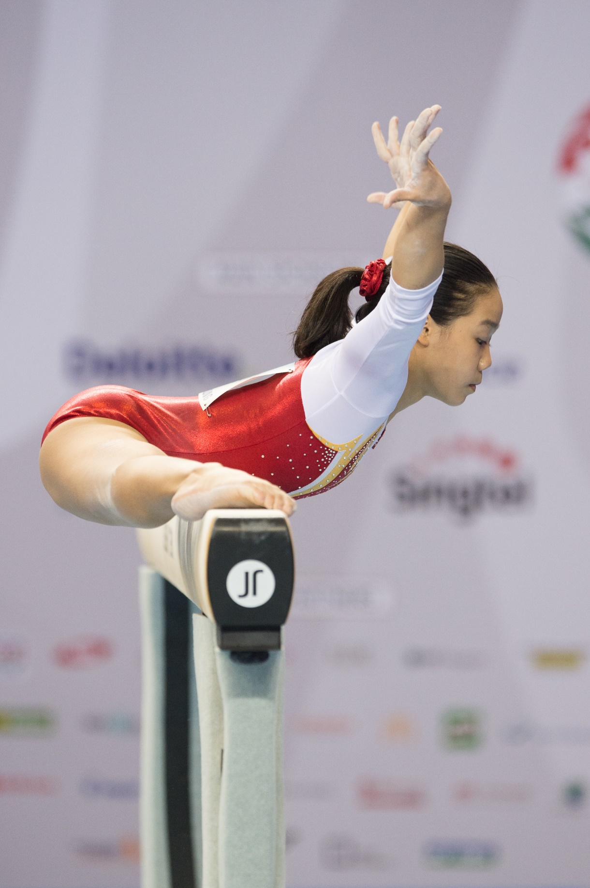

Gymnastics has been an integral part of my life for almost a whole decade, and it has been a very memorable chapter indeed. Unlike most, I started gymnastics pretty late. I was eight when I decided to join recreational gymnastics classes, training twice a week. Starting off at level 2, I slowly built up my skills and eventually had the chance to train with the National Team, where we had training six times a week, five hours a day.
Throughout my gymnastics career, I was privileged to have many opportunities to represent Singapore, which I would not have been able to do so without the guidance of our coaches and support from my family, Singapore Gymnastics, and the SNOC.
Here are some competitions I took part in:
Uneven Bars Final - 7th | Balance Beam Final - 7th
This was my first overseas competition competing in the senior category, and also my most memorable one. As this was my first competition on the world stage, I got the chance to see many of my sporting idols competing in real life. I vividly recall having goose bumps while watching Larisa Iordache perform her routine on the floor exercise (please watch it its amazing). During qualifications, I even managed to get my personal best score of 14.150 on the balance beam! This competition really lit the spark in me to train harder.
Here's a newspaper article about this.
Team - 6th
This competition was also memorable, but in a less pleasant way. In the trainings leading up to the Games, I had a really sharp pain in my knee, which made training unbearable. But I still pushed through, (you know, because it’s The Games), and during my competition routine, my knee just gave way, and I was unable to compete for the rest of the competition. Turns out, I had broken my knee, and I had to get surgery to put a screw in my knee. Fun stuff.
So I flew back to Singapore on business class (a silver lining), got my surgery, and started rehab. It was very difficult to recover and get back to my original form but after 6 months I managed to.
asdjngkfaenijcakdsfna
Team - Silver | Uneven Bars - 4th | Beam - 8th